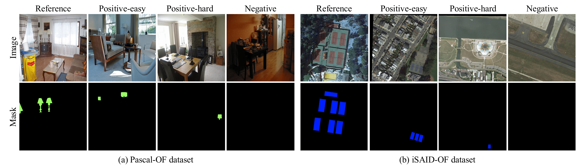

Open-World Few-Shot Segmentation: A Prototype-Debiasing Approach for Real-World Scenarios
Few-shot segmentation (FSS) benchmarks typically assume the reference class appears in every target image, but in real-world scenarios the object may be partially visible, occluded, or entirely absent. To address this, we introduce the Open-World FSS Benchmark by re-partitioning PASCAL VOC, Pascal-Context, COCO-Stuff, and iSAID into negative, easy, and hard subsets per class based on presence and entropy. We also propose a training-free prototype-debiasing module that projects support prototypes away from background directions and restores fine boundaries via joint bilateral upsampling. Simply inserting this lightweight module into existing FSS models—without any fine-tuning—yields consistent accuracy improvements on both the Open-World and standard FSS benchmarks.

An overview of the Open-World FSS Benchmark, illustrated with an example from the PASCAL-OF dataset.
Architecture
We introduce a Prototype-Debiasing (PD) module for open-world FSS that works in three stages:
- Debiased Prototype Construction – extract spatial and global features from a ViT backbone and purify the foreground prototype by removing background and class bias.
- Orthogonal Similarity Estimation – compute an orthogonal cosine map from the debiased features to isolate high-confidence foreground regions.
- Refinement & Prompt-based Segmentation – sharpen the similarity map for precise boundaries, generate point prompts, and select final masks via graph-based filtering.

Open-World FSS Benchmark
We present the first benchmark that evaluates few-shot segmentation under presence uncertainty, introducing positive-easy, positive-hard, and negative subsets across four widely used datasets.
